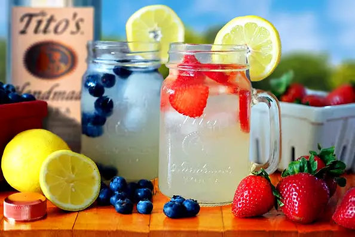
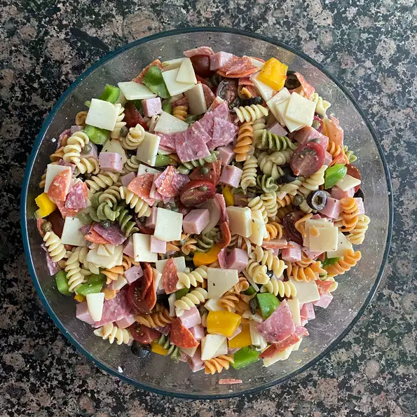

Recipes
-

Tito's Berry Lemonade
A refreshing cocktail mixed with fresh berries, lemonade, and Tito's Handmade Vodka. Garnish with a lemon slice or add more strawberries.
-

Awesome Pasta Salad
This is the best pasta salad I've ever eaten, and people request it frequently. It's a very easy, light-tasting side dish for a picnic or dinner.
-
 Amish Slaw
Amish Slaw
I live in a wonderful Amish community and the ladies here are wonderful cooks. This is a lovely cole slaw recipe for those who like slaw without mayonnaise.